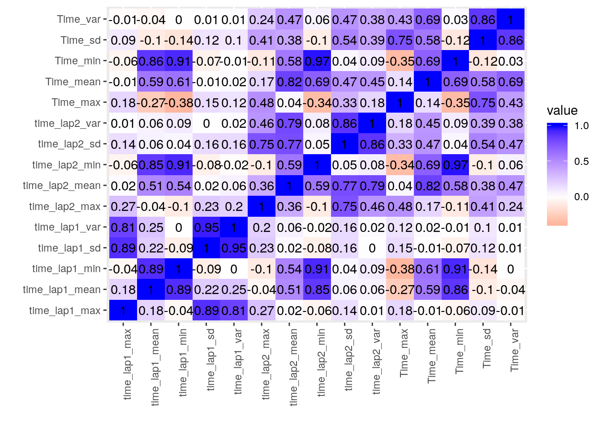
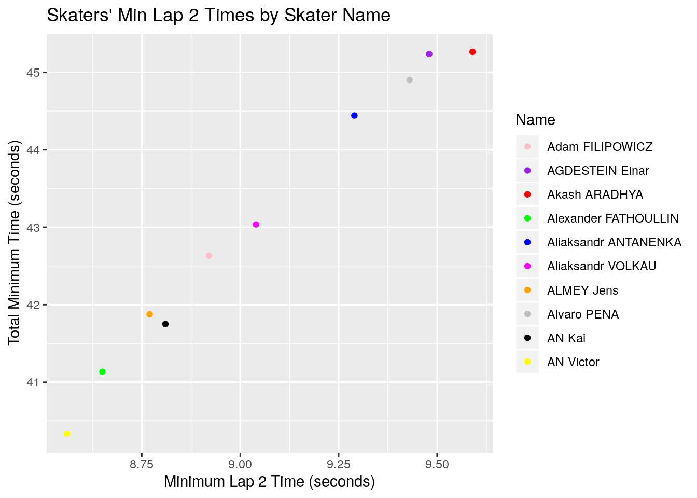

January 1, 0001
R Markdown
This is an R Markdown document. Markdown is a simple formatting syntax for authoring HTML, PDF, and MS Word documents. For more details on using R Markdown see http://rmarkdown.rstudio.com.
When you click the Knit button a document will be generated that includes both content as well as the output of any embedded R code chunks within the document. You can embed an R code chunk like this:
summary(cars)## speed dist
## Min. : 4.0 Min. : 2.00
## 1st Qu.:12.0 1st Qu.: 26.00
## Median :15.0 Median : 36.00
## Mean :15.4 Mean : 42.98
## 3rd Qu.:19.0 3rd Qu.: 56.00
## Max. :25.0 Max. :120.00Including Plots
Import data and use pivot_longer() to undity. Then use pivot_wider() to tidy data.
Join two data sets. Eliminate unnescessary cases.
skating <- ss1%>%full_join(ss2)## Joining, by = "Time"skating_NA <- skating %>% na.omit()Use filter() and summarize() to find the fastest (aka the lowest) total time of skater Yuri CONFORTOLA.
skating_NA%>% filter(Name=="Yuri CONFORTOLA")%>%summarize(min(Time))## min(Time)
## 1 41.562Use select() to make a dataset without Skater Number (Num_Skater) since the data already has skater names so you can identify the skater and you don’t want to look at excess data.
No_Num_Skater <-skating_NA%>%select(-Num_Skater)
glimpse(No_Num_Skater)## Observations: 10,598
## Variables: 5
## $ Time <dbl> 43.459, 43.790, 43.790, 43.790, 44.676, 46.462, 42.776, 42.…
## $ time_lap1 <dbl> 7.52, 7.44, 7.44, 7.44, 7.64, 7.46, 7.08, 7.08, 7.08, 6.95,…
## $ time_lap2 <dbl> 9.22, 9.31, 9.31, 9.31, 9.74, 9.93, 9.18, 9.18, 9.18, 9.24,…
## $ Group <int> 1, 1, 5, 6, 1, 1, 2, 7, 6, 2, 8, 2, 2, 3, 1, 2, 7, 3, 3, 3,…
## $ Name <fct> Yuri CONFORTOLA, Serhiy LIFYRENKO, DOTTI Tommaso, PETRE War…Use arrange() and group_by() to make a dataset that contain the mean of skaters’ times for time_lap1
skater_mean_lap1 <- No_Num_Skater%>%group_by(Name)%>%summarize(mean_rank=mean(time_lap1,na.rm=T))%>%arrange(mean_rank)
glimpse(skater_mean_lap1)## Observations: 304
## Variables: 2
## $ Name <fct> Liam McFARLANE, Michael GILDAY, WU Dajing, HAMELIN Charles,…
## $ mean_rank <dbl> 6.895556, 6.903571, 6.911745, 6.920632, 6.926396, 6.943295,…Use mutate()
No_Num_Skater%>%ungroup()%>%mutate(total_lap=time_lap1+time_lap2)%>%arrange(desc(Name))%>%filter(total_lap==min(total_lap))## Time time_lap1 time_lap2 Group Name total_lap
## 1 41.949 6.59 8.46 1 Vladimir GRIGOREV 15.05
## 2 41.949 6.59 8.46 2 Patrick DUFFY 15.05
## 3 41.949 6.59 8.46 2 DUFBERG SUH Fabrice 15.05The fastest time was 15.05 ssecond for from seasons spanning 2012-2016 and there were three skaters that were able to obtain the fastest score throughout the years: Vladimir Grigorev, Patrick Duffy, and Bufberg Suh Fabrice.
Use summary statistics (mean,min,max,sd,var) for each of the numeric variables both overall and after grouping by one of the categorical variables.
Skater_Sum_1 <- No_Num_Skater%>%summarize_if(is.numeric,funs(mean,min,max,sd,var))%>%glimpse()## Warning: funs() is soft deprecated as of dplyr 0.8.0
## Please use a list of either functions or lambdas:
##
## # Simple named list:
## list(mean = mean, median = median)
##
## # Auto named with `tibble::lst()`:
## tibble::lst(mean, median)
##
## # Using lambdas
## list(~ mean(., trim = .2), ~ median(., na.rm = TRUE))
## This warning is displayed once per session.## Observations: 1
## Variables: 20
## $ Time_mean <dbl> 42.73806
## $ time_lap1_mean <dbl> 7.097244
## $ time_lap2_mean <dbl> 9.040076
## $ Group_mean <dbl> 4.179657
## $ Time_min <dbl> 39.937
## $ time_lap1_min <dbl> 6.55
## $ time_lap2_min <dbl> 8.46
## $ Group_min <int> 1
## $ Time_max <dbl> 101.82
## $ time_lap1_max <dbl> 19.55
## $ time_lap2_max <dbl> 34.68
## $ Group_max <int> 21
## $ Time_sd <dbl> 3.987916
## $ time_lap1_sd <dbl> 0.3780306
## $ time_lap2_sd <dbl> 0.8095224
## $ Group_sd <dbl> 3.223808
## $ Time_var <dbl> 15.90347
## $ time_lap1_var <dbl> 0.1429072
## $ time_lap2_var <dbl> 0.6553265
## $ Group_var <dbl> 10.39294Skater_Sum_1_final <-Skater_Sum_1%>%select(-Group_mean,-Group_sd,-Group_var)%>%glimpse()## Observations: 1
## Variables: 17
## $ Time_mean <dbl> 42.73806
## $ time_lap1_mean <dbl> 7.097244
## $ time_lap2_mean <dbl> 9.040076
## $ Time_min <dbl> 39.937
## $ time_lap1_min <dbl> 6.55
## $ time_lap2_min <dbl> 8.46
## $ Group_min <int> 1
## $ Time_max <dbl> 101.82
## $ time_lap1_max <dbl> 19.55
## $ time_lap2_max <dbl> 34.68
## $ Group_max <int> 21
## $ Time_sd <dbl> 3.987916
## $ time_lap1_sd <dbl> 0.3780306
## $ time_lap2_sd <dbl> 0.8095224
## $ Time_var <dbl> 15.90347
## $ time_lap1_var <dbl> 0.1429072
## $ time_lap2_var <dbl> 0.6553265Skater_Sum <- No_Num_Skater%>%group_by(Name)%>%select(-Group)%>%summarize_if(is.numeric,funs(mean,min,max,sd,var))
Skater_Sum_NA <- Skater_Sum%>%na.omit()Find the correlation values for the numeric variables.
cor <- Skater_Sum_NA%>%select_if(is.numeric)
Skater_Sum_NA_cor <-cor(cor)%>%as.data.frame%>%rownames_to_column%>%pivot_longer(-1,names_to="name",values_to="correlation")
glimpse(Skater_Sum_NA_cor)## Observations: 225
## Variables: 3
## $ rowname <chr> "Time_mean", "Time_mean", "Time_mean", "Time_mean", "Time…
## $ name <chr> "Time_mean", "time_lap1_mean", "time_lap2_mean", "Time_mi…
## $ correlation <dbl> 1.00000000, 0.58719659, 0.81705848, 0.68675184, 0.6114404…Make a correlation heatmap of the numeric variables.
Skater_Sum_NA%>%select_if(is.numeric)%>%cor%>%as.data.frame%>%rownames_to_column%>%pivot_longer(-1)%>%ggplot(aes(rowname,name,fill=value))+geom_tile()+geom_text(aes(label=round(value,2)))+xlab("")+ylab("")+scale_fill_gradient2(low="red",high="blue")+theme(axis.text.x = element_text(angle=90, hjust=1))
Make a ggplot
Lap_2_Time_Min <- Skater_Sum_NA%>% slice(1:10)
time_lap2_plot <- ggplot(data = Lap_2_Time_Min, aes(x = time_lap2_min, y = Time_min, color =Name)) + geom_point()
time_lap2_plot + ggtitle("Skaters' Min Lap 2 Times") + ylab("Total Minimum Time (seconds)") + xlab("Minimum Lap 2 Time (seconds)") + scale_color_manual(name = "Name", labels = c("Adam FILIPOWICZ", "AGDESTEIN Einar", "Akash ARADHYA", "Alexander FATHOULLIN", "Aliaksandr ANTANENKA", "Aliaksandr VOLKAU", "ALMEY Jens", "Alvaro PENA", "AN Kai", "AN Victor"), values = c("pink", "purple", "red", "green", "blue", "magenta", "orange", "gray", "black", "yellow"))
Make another ggplot
No_Num_Name_Skater <- No_Num_Skater%>%select(-Name)
ggplot02 <- ggplot(No_Num_Name_Skater, aes(x = Group,time_lap1))+ geom_point(size=3,aes(color= time_lap2))+scale_color_gradient(low="blue", high="red") + theme(axis.text.x = element_text(angle=90, hjust=1))
ggplot02 + ggtitle(" Lap 1 and 2 Times for Skaters ") + ylab("Lap 2 Times (sec)") + xlab("Group Number") 
ggplot01 <- ggplot(data = No_Num_Name_Skater, aes(x = time_lap1, y = time_lap2, color = Group)) + geom_bar(stat="summary")+scale_color_gradient(low="blue", high="red")
ggplot01 + ggtitle(" Lap 1 and 2 Times for Skaters ") + ylab("Lap 2 Times (sec)") + xlab("Lap 1 Times (sec)") ## No summary function supplied, defaulting to `mean_se()
library(cluster)
sil_width<-vector()
for(i in 2:10){
pam_fit <- No_Num_Skater%>%select(-Name)%>%pam(i)
sil_width[i] <- pam_fit$silinfo$avg.width
}
ggplot()+geom_line(aes(x=1:10,y=sil_width))+scale_x_continuous(name="k",breaks=1:10)## Warning: Removed 1 rows containing missing values (geom_path).pam2<-No_Num_Skater%>%select(-Name)%>%pam(3)
final <- No_Num_Skater%>%mutate(cluster=as.factor(pam2$clustering))
ggplot(final, aes(x=Time,y=time_lap2,color=cluster))+geom_point()